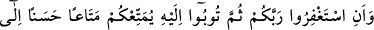
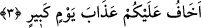

3. Ve Rabb’inizden mağfiret dileyesiniz, sonra da O’na tevbe edesiniz ki, sizi
belirlenmiş bir süreye kadar güzelce yaşatsın ve her lütuf sahibine lütfetsin. Eğer
yüz çevirirseniz, ben sizin için büyük bir günün azâbından korkarım.
“Ve Rabb’inizden mağfiret dileyesiniz” İstiğfar mağfiret dilemek demektir. Mağfiret
ise kulun günahlarının dünyada gizlenip örtülmesi, âhirette de azâbdan vazgeçilmesidir.
“sonra da O’na tevbe edesiniz” Semerkandî’nin Bahru’l-ulûm’un da belirtildiği
gibi O’na ihlasla tevbe edip bu tevbe üzere dosdoğru kalasınız.
el-İrşâd’da der ki: “Allah Teâlâ bu sağlamlaştırma ve güzelce açıklama işini ibadeti
O’na has kılasınız, irtikâb ettiğiniz şirki bağışlamasını O’ndan taleb edesiniz; sonra da
tâat ile O’na dönesiniz diye yaptı.”
Bu durumda “ __WORD__ ”, yine normalde olduğu gibi zaman açısından sonralığa delâlet etmiş
olur. “Sümme”nin ayrıca bir takip ve sonralık mânâsı düşünülmeksizin iki şey
arasındaki farklılık ve derece uzaklığına delâlet ediyor olması da câizdir. Çünkü kulun
tamâmen Allah’a yönelmesi demek olan tevbe ile mağfiret dileme arasında çok büyük
bir mesâfe vardır. Ferrâ der ki: “Sümme” burada “vav” ve mânâsındadır. Çünkü
istiğfâr da bir tevbedir.”
Fakir (Bursevî) der ki: İstiğfar ile tevbeyi birbirinden ayırmışlardır. Nitekim
Haddâdî: “Kim bir kötülük yapar yahut nefsine zulmeder de sonra Allah’tan
mağfiret dilerse...” (en-Nisa, 4/110) âyetini açıklarken, “yani sâdık bir tevbe ile
(mağfiret dilerse)” der. Tevbe şart koşulmuştur. Çünkü istiğfar ile birlikte “Kötülük
yaptım, şimdi tevbe ediyorum. Bu kötülüğe bir daha aslâ dönmeyeceğim, ya Rabbi beni
bağışla.” demedikçe bu istiğfâr ittifakla tevbe sayılmaz.
“ki, sizi belirlenmiş bir süreye” takdir edilen ömürlerinizin sonuna “kadar güzelce
yaşatsın” râzı olacağınız bir hayat yaşatsın, arzu ettiğiniz her şeye ulaşın, keder veren
şeylerden hiçbiri sizi üzmesin de yataklarınızda can verin.
Nitekim anlatıldığına göre Allah Teâla, Musâ (a.s.)’a Fir’avn’a şöyle demesini
vahyetti: “Şayet bir olan Allah’a îmân edersen seni hükümdarlığında uzun ömürlü kılar
ve seni taze bir delikanlı haline çevirir.” Hâmân, onu alıkoyarak: “Ben de seni bir
delikanlı gibi bırakabilirim.” dedi. Bunu söyledikten sonra gidip bir boya getirdi ve
onunla Fir’avn’un sakalını boyadı. Böylece Fir’avn sakalını siyaha boyayan ilk kişi
olmuştur.
Utbî der ki: “__WORD__” aslında uzatmak demektir. Buna göre âyetin mânâsı şöyle olur:
“Tevbe edin ki dünyanın sonuna kadar kökünüzü kazıma azâbıyla sizi helâk etmesin.”
Burada iki soru vardır: Birincisi şudur: Hz. Peygamber (s.a.)’in: “Dünya, mü’minin